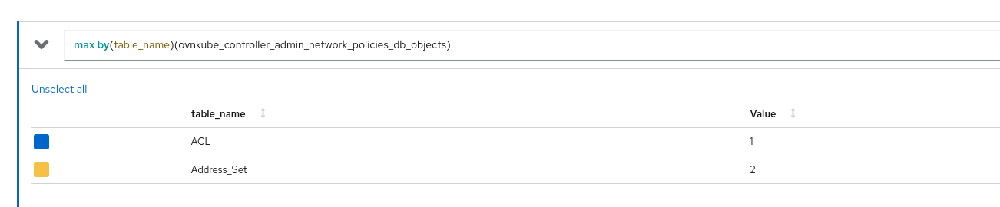
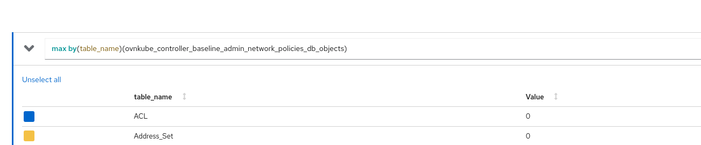
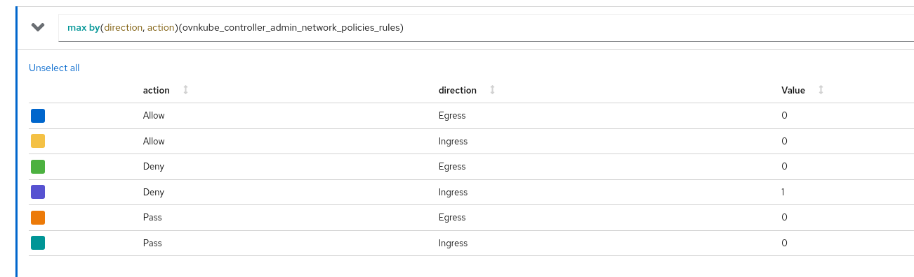
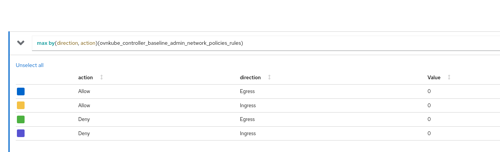

AdminNetworkPolicy¶
Introduction¶
Being able to enforce airtight application security at the cluster-wide level has been a popular ask from cluster administrators. Key admin user stories include:
- As a cluster administrator, I want to enforce non-overridable admin network policies that have to be adhered to by all user tenants in the cluster, thus securing my cluster’s network traffic.
- As a cluster administrator, I want to implement specific network restrictions across multiple tenants (a tenant here refers to one or more namespaces), thus facilitating network multi-tenancy.
- As a cluster administrator, I want to enforce the tenant isolation model (a tenant cannot receive traffic from any other tenant) as the cluster’s default network security standard, thus delegating the responsibility of explicitly allowing traffic from other tenants to the tenant owner using NetworkPolicies.
AdminNetworkPolicy has been designed precisely to solve these problems. It provides a comprehensive cluster-wide network security solution for cluster administrators using two cluster-scoped CRDs:
- AdminNetworkPolicy API and
- BaselineAdminNetworkPolicy API
which are shipped by the sig-network-policy-api working group as out-of-tree Kubernetes APIs. Both these APIs can be used to define cluster-wide admin policies in order to secure your cluster’s network traffic. These APIs are currently in the v1alpha1 version and subject to change based on upstream developments before becoming stable v1.
Motivation¶
NetworkPolicies in Kubernetes were created for developers to be able to secure their applications. Hence they are under the control of potentially untrusted application authors. They are namespace scoped and are not suitable for solving the above user stories for cluster administrators because:
- They are not cluster-scoped and hence its hard to define a network of policies that spans across namespaces - you'd have to duplicate the same policy over and over in each namespace
- They cannot be created before the namespace is created (KAPI server expects the namespace to be created first since it's namespace scoped); thus they cannot satisfy the requirements where admins may want the policies to be applicable to arbitrary future namespaces that could get created in the cluster.
Another motivation was to fix some of the usability aspects of the NetworkPolicy API.
NetworkPolicy API is designed with an implicit deny-all policy, meaning that with the
first created policy all traffic not allowed by it will be denied. NetworkPolicy only
defines which connection will be allowed. Then we make other exceptions like except
blocks in ipBlock construct which is an explicit what not to allow within the allowList.
Network administrators prefer to have the power of defining what exactly to deny and
allow instead of this implicit model.
User-Stories/Use-Cases¶
Check out the original User Stories for AdminNetworkPolicy. Follow the new developments for this API via the Network Policy Enhancement Proposals. Let us look at some practical use cases of when to use admin network policies in your cluster:
- Isolate tenants
{kind=link}
- Always allow egress traffic from all workloads to DNS namespace or splunk namespace
{kind=link}
- Always allow ingress traffic from monitoring namespace to all workloads
{kind=link}
- Delegate to namespace scoped network policies (we will learn more about what this is in the following sections)
{kind=link}
- Always deny traffic to sensitive namespaces from everywhere
{kind=link}
How to enable this feature on an OVN-Kubernetes cluster?¶
This feature is enabled by default on all OVN-Kubernetes clusters.
You don't need to do anything extra to start using this feature.
There is a Feature Config option enable-admin-network-policy under
OVNKubernetesFeatureConfig config that can be used to disable this
feature. However note that disabling the feature will not remove
existing CRs in the cluster.
When the feature is enabled, the CRDs are installed on the cluster
and the AdminNetworkPolicy controller is invoked.
Always check the dependencies on the Requirements page
$ oc get crd adminnetworkpolicies.policy.networking.k8s.io
NAME CREATED AT
adminnetworkpolicies.policy.networking.k8s.io 2023-10-01T11:33:58Z
$ oc get crd baselineadminnetworkpolicies.policy.networking.k8s.io
NAME CREATED AT
baselineadminnetworkpolicies.policy.networking.k8s.io 2023-10-01T11:33:58Z
Workflow Description¶
Implementation Details¶
User facing API Changes¶
Like mentioned above, the API lives in the kubernetes-sigs repo.
AdminNetworkPolicy Sample API¶
Let us look at a sample ANP yaml:
apiVersion: policy.networking.k8s.io/v1alpha1
kind: AdminNetworkPolicy
metadata:
name: cluster-control
spec:
priority: 34
subject:
namespaces: {}
ingress:
- name: "allow-from-ingress-nginx" # rule0
action: "Allow"
from:
- namespaces:
matchLabels:
kubernetes.io/metadata.name: ingress-nginx
- name: "allow-from-monitoring" # rule1
action: "Allow"
from:
- namespaces:
matchLabels:
kubernetes.io/metadata.name: monitoring
ports:
- portNumber:
protocol: TCP
port: 7564
- namedPort: "scrape"
- name: "allow-from-open-tenants" # rule2
action: "Allow"
from:
- namespaces: # open tenants
matchLabels:
tenant: open
- name: "pass-from-restricted-tenants" # rule3
action: "Pass"
from:
- namespaces: # restricted tenants
matchLabels:
tenant: restricted
- name: "default-deny" # rule4
action: "Deny"
from:
- namespaces: {}
egress:
- name: "allow-to-dns" # rule0
action: "Allow"
to:
- pods:
namespaceSelector:
matchLabels:
kubernetes.io/metadata.name: kube-system
podSelector:
matchLabels:
app: dns
ports:
- portNumber:
protocol: UDP
port: 5353
- name: "allow-to-kapi-server" # rule1
action: "Allow"
to:
- nodes:
matchExpressions:
- key: node-role.kubernetes.io/control-plane
operator: Exists
ports:
- portNumber:
protocol: TCP
port: 6443
- name: "allow-to-splunk" # rule2
action: "Allow"
to:
- namespaces:
matchLabels:
tenant: splunk
ports:
- portNumber:
protocol: TCP
port: 8991
- portNumber:
protocol: TCP
port: 8992
- name: "allow-to-open-tenants-and-intranet-and-worker-nodes" # rule3
action: "Allow"
to:
- nodes: # worker-nodes
matchExpressions:
- key: node-role.kubernetes.io/worker
operator: Exists
- networks: # intranet
- 172.30.0.0/30
- 10.0.54.0/19
- 10.0.56.38/32
- 10.0.69.0/24
- namespaces: # open tenants
matchLabels:
tenant: open
- name: "pass-to-restricted-tenants" # rule4
action: "Pass"
to:
- namespaces: # restricted tenants
matchLabels:
tenant: restricted
- name: "default-deny"
action: "Deny"
to:
- networks:
- 0.0.0.0/0
subjectis the set of pods selected bycluster-controlANP, on which the rules in the policy are applied on. Here its all the pods in the cluster.- Each AdminNetworkPolicy resource will have a
.spec.priorityfield.priorityis 34 here that determines the priority of this ANP versus other ANPs in your cluster. The lower the number the higher the precedence. Thus 0 is the highest priority and 99 (the largest number supported by OVN-Kubernetes) is the lowest priority. ingresshas 5 rules:- rule0: always allow ingress traffic coming from ingress-nginx namespace to all the pods in the cluster
- rule1: always allow TCP ingress traffic coming from port 7564 of pods in monitoring namespace
- rule2: always allow all ingress traffic from
opentenant's namespaces - rule3: always pass all ingress traffic from
restrictedtenant's namespaces (please check the following sections to learn more about whatpassis) - rule4: deny all other ingress traffic including same namespace pods
egresshas 6 rules:- rule0: always allow egress traffic coming from all pods to dns pods
- rule1: always allow TCP egress traffic coming from all pods to KAPI pods
- rule2: always allow all egress traffic coming from all pods to splunk logging tenant at TCP ports 8991 and 8992
- rule3: always allow all egress traffic to
opentenant's namespaces, company's intranet CIDR ranges and all worker nodes in the cluster - rule4: always pass all egress traffic to
restrictedtenant's namespaces (please check the following sections to learn more about whatpassis) - rule5: deny all other egress traffic including same namespace pods
You can do oc apply -f cluster-control.yaml to create this ANP in your cluster
$ oc get anp
NAME PRIORITY AGE
cluster-control 34 3s
BaselineAdminNetworkPolicy Sample API¶
Unlike ANP's BANP is a singleton object in your cluster. BANP specifies baseline policies that apply unless they are overridden by a NetworkPolicy or ANP.
Let us look at a sample BANP yaml:
apiVersion: policy.networking.k8s.io/v1alpha1
kind: BaselineAdminNetworkPolicy
metadata:
name: default
spec:
subject:
namespaces: {}
ingress:
- name: "default-deny"
action: "Deny"
from:
- namespaces: {}
egress:
- name: "default-deny"
action: "Deny"
to:
- namespaces: {}
You can do oc apply -f default.yaml to create this ANP in your cluster
$ oc get banp
NAME AGE
default 16m
Note that when you use {} selectors to select pods
you are selecting ALL the pods in the cluster including
kube-system and ovn-kubernetes namespaces which is
something you probably don't want to do. If you do this,
then the cluster will go into a non-functional state since
basic infrastructued pods cannot communicate unless you
explicitly define higher priority allow rules.
Almost always you probably need a policy that looks like:
apiVersion: policy.networking.k8s.io/v1alpha1
kind: BaselineAdminNetworkPolicy
metadata:
name: default
spec:
subject:
namespaces:
matchLabels:
type: all-workload-namespaces
ingress:
- name: "default-deny"
action: "Deny"
from:
- namespaces:
matchLabels:
type: all-workload-namespaces
egress:
- name: "default-deny"
action: "Deny"
to:
- namespaces:
matchLabels:
type: all-workload-namespaces
OVN-Kubernetes Implementation Details¶
We have a new level driven controller in OVN-Kubernetes called admin_network_policy which watches for the following objects:
- AdminNetworkPolicy
- BaselineAdminNetworkPolicy
- Namespaces
- Pods
- Nodes
in your cluster. For each add, update and delete event that this controller cares about for each of the above objects, it add's it to the centralized ANP and BANP queue in a single threaded fashion.
The controller maintains an internal cache state for each corresponding ANP and tries to level the current state configuration for a given ANP with the desired state configuration for that ANP.
It also emits events like ANPWithUnsupportedPriority and
ANPWithDuplicatePriority so that users are aware in those
circumstances.
Pass Action: Delegate decision to NetworkPolicies¶
In addition to setting Deny and Allow actions on ANP API rules,
one can also use the Pass action for a rule. What this means is
ANP controller defers the decision of connections that match the pass
action rule to either the NetworkPolicy OR to the BaselineAdminNetworkPolicy
defined in the cluster (if either of them match the same set of pods,
then they will take effect and if not, the result will be an Allow).
Order of precedence: AdminNetworkPolicy (Tier1) > NetworkPolicy(Tier2) > BaselineAdminNetworkPolicy (Tier3).
{kind=link}
Ingress rule3 and Egress rule4 are examples of Pass action. Such
rules are created when the administrator wants to delegate the decision
of whether that connection should be allowed or not to NetworkPolicies
defined by tenant owners.
If we now define a network policy in restricted tenant's namespace
that matches on same ingress peers as in the subject of our cluster-control
admin network policy, that network policy will take effect.
This is how administrators can delegate a decision making to the namespace
owners in a cluster.
Pass Action: Delegate decision to BaselineAdminNetworkPolicies¶
Since we can delegate decisions from administrators to namespace owners,
what if namespace owners don't have policies in place for the same set of
subjects? Admins in such cases might want to keep a default set of guardrails
in the cluster. Thus we allow one BANP to be created in the cluster with the
name default. BANP doesn't have any priority field, since we can have only
one in the cluster. Rest of the implementation details for ANP is applicable
to BANP as well.
OVN Constructs created in the databases¶
- Each AdminNetworkPolicy CRD can have upto 100 ingress rules and 100 egress rules,
thus 200 rules in total. The ordering of each rule is important. If the rule is
at the top of the list then it has the highest precedence and if the rule is
at the bottom it has the lowest precedence. Each rule translates to
nbdb.ACL. We will have:- one single
nbdb.ACLiflen(rule.ports) == 0 && len(rule.namedPorts) == 0 - one
nbdb.ACLper protocol iflen(rule.ports) > 0 and len(rule.namedPorts) == 0(so max 3nbdb.ACLs(tcp,udp,sctp) per rule {portNumber,portRangetype ports ONLY}) - one
nbdb.ACLper protocol iflen(rule.namedPorts) > 0 and len(rule.ports) == 0(so max 3 ACLs (tcp,udp,sctp) per rule {namedPorttype ports ONLY}) - one ACL per protocol if
len(rule.ports) > 0and one ACL per protocolif len(rule.namedPorts) > 0(so max 6 ACLs (2tcp,2udp,2sctp) per rule {portNumber,portRange,namedPortsall are present})
- one single
- Since we can have upto 100 policies and each one can have upto 100 gress rules
(100*100), we have blocked out the range: 30,000 - 20,000 priority range for
the OVN
nbdb.ACLtable in theTier1block for ANP's implementation. - Since we can have only 1 BANP in the cluster, we keep
nbdb.ACL's priority range 1750 - 1649 range reserved for BANP ACLs in theTier3block for BANP's implementation. - Each AdminNetworkPolicy CRD will have a subject on which the policy is
applied on - this is translated to one
nbdb.PortGroupon which thenbdb.ACLsof each rule in the policy are attached on. So there is onenbdb.PortGroupper ANP created. - Each gress rule can have upto 100 peers. Each rule will also create an
nbdb.AddressSetwhich will contain the IPs of all the pods, nodes and networks that are selected by the peer selector across all the peers of that given rule.
For the ANP created above, let us look at how these OVN constructs would look like using the following commands:
NOTE: All commands must be run inside the ovnkube-node pod because that is where the NBDB container is running.
nbdb.ACL: These can be listed using ovn-nbctl list acl
The Ingress ACLs for the above AdminNetworkPolicy are:
_uuid : f4523ce3-fb80-4d68-a50b-8aa6a795f895
action : allow-related
direction : to-lport
external_ids : {direction=Ingress, gress-index="0", "k8s.ovn.org/id"="default-network-controller:AdminNetworkPolicy:cluster-control:Ingress:0:None", "k8s.ovn.org/name"=cluster-control, "k8s.ovn.org/owner-controller"=default-network-controller, "k8s.ovn.org/owner-type"=AdminNetworkPolicy, port-policy-protocol=None}
label : 0
log : false
match : "outport == @a14645450421485494999 && ((ip4.src == $a14545668191619617708))"
meter : acl-logging
name : "ANP:cluster-control:Ingress:0"
options : {}
priority : 26600
severity : []
tier : 1
_uuid : 4117970c-c138-45b5-a6de-8e5e54efcb04
action : allow-related
direction : to-lport
external_ids : {direction=Ingress, gress-index="1", "k8s.ovn.org/id"="default-network-controller:AdminNetworkPolicy:cluster-control:Ingress:1:tcp", "k8s.ovn.org/name"=cluster-control, "k8s.ovn.org/owner-controller"=default-network-controller, "k8s.ovn.org/owner-type"=AdminNetworkPolicy, port-policy-protocol=tcp}
label : 0
log : false
match : "outport == @a14645450421485494999 && ((ip4.src == $a6786643370959569281)) && tcp && tcp.dst==7564"
meter : acl-logging
name : "ANP:cluster-control:Ingress:1"
options : {}
priority : 26599
severity : []
tier : 1
_uuid : 1b1b1409-b96a-4e6d-9776-00d88c0c7ac9
action : allow-related
direction : to-lport
external_ids : {direction=Ingress, gress-index="1", "k8s.ovn.org/id"="default-network-controller:AdminNetworkPolicy:cluster-control:Ingress:1:tcp-namedPort", "k8s.ovn.org/name"=cluster-control, "k8s.ovn.org/owner-controller"=default-network-controller, "k8s.ovn.org/owner-type"=AdminNetworkPolicy, port-policy-protocol=tcp-namedPort}
label : 0
log : false
match : "((ip4.src == $a6786643370959569281)) && tcp && ((ip4.dst == 10.244.1.4 && tcp.dst == 8080) || (ip4.dst == 10.244.2.8 && tcp.dst == 8080) || (ip4.dst == 10.244.2.8 && tcp.dst == 8080))"
meter : acl-logging
name : "ANP:cluster-control:Ingress:1"
options : {}
priority : 26599
severity : []
tier : 1
_uuid : 00400c05-7225-4d64-9428-8b2a04c6c3da
action : allow-related
direction : to-lport
external_ids : {direction=Ingress, gress-index="2", "k8s.ovn.org/id"="default-network-controller:AdminNetworkPolicy:cluster-control:Ingress:2:None", "k8s.ovn.org/name"=cluster-control, "k8s.ovn.org/owner-controller"=default-network-controller, "k8s.ovn.org/owner-type"=AdminNetworkPolicy, port-policy-protocol=None}
label : 0
log : false
match : "outport == @a14645450421485494999 && ((ip4.src == $a13730899355151937870))"
meter : acl-logging
name : "ANP:cluster-control:Ingress:2"
options : {}
priority : 26598
severity : []
tier : 1
_uuid : 7f5ea19b-d465-4de4-8369-bdf66fdcd7d9
action : pass
direction : to-lport
external_ids : {direction=Ingress, gress-index="3", "k8s.ovn.org/id"="default-network-controller:AdminNetworkPolicy:cluster-control:Ingress:3:None", "k8s.ovn.org/name"=cluster-control, "k8s.ovn.org/owner-controller"=default-network-controller, "k8s.ovn.org/owner-type"=AdminNetworkPolicy, port-policy-protocol=None}
label : 0
log : false
match : "outport == @a14645450421485494999 && ((ip4.src == $a764182844364804195))"
meter : acl-logging
name : "ANP:cluster-control:Ingress:3"
options : {}
priority : 26597
severity : []
tier : 1
_uuid : 3e82df77-ad40-4dce-bd96-5b9e7e0b3603
action : drop
direction : to-lport
external_ids : {direction=Ingress, gress-index="4", "k8s.ovn.org/id"="default-network-controller:AdminNetworkPolicy:cluster-control:Ingress:4:None", "k8s.ovn.org/name"=cluster-control, "k8s.ovn.org/owner-controller"=default-network-controller, "k8s.ovn.org/owner-type"=AdminNetworkPolicy, port-policy-protocol=None}
label : 0
log : false
match : "outport == @a14645450421485494999 && ((ip4.src == $a13814616246365836720))"
meter : acl-logging
name : "ANP:cluster-control:Ingress:4"
options : {}
priority : 26596
severity : []
tier : 1
The Egress ACLs for the above AdminNetworkPolicy are:
_uuid : fdb266b7-758a-4471-9cc1-84d00dc4f2ae
action : allow-related
direction : from-lport
external_ids : {direction=Egress, gress-index="0", "k8s.ovn.org/id"="default-network-controller:AdminNetworkPolicy:cluster-control:Egress:0:udp", "k8s.ovn.org/name"=cluster-control, "k8s.ovn.org/owner-controller"=default-network-controller, "k8s.ovn.org/owner-type"=AdminNetworkPolicy, port-policy-protocol=udp}
label : 0
log : false
match : "inport == @a14645450421485494999 && ((ip4.dst == $a13517855690389298082)) && udp && udp.dst==5353"
meter : acl-logging
name : "ANP:cluster-control:Egress:0"
options : {apply-after-lb="true"}
priority : 26600
severity : []
tier : 1
_uuid : 8f1b8170-c350-4e9d-8ff0-a3177f9749ca
action : allow-related
direction : from-lport
external_ids : {direction=Egress, gress-index="1", "k8s.ovn.org/id"="default-network-controller:AdminNetworkPolicy:cluster-control:Egress:1:tcp", "k8s.ovn.org/name"=cluster-control, "k8s.ovn.org/owner-controller"=default-network-controller, "k8s.ovn.org/owner-type"=AdminNetworkPolicy, port-policy-protocol=tcp}
label : 0
log : false
match : "inport == @a14645450421485494999 && ((ip4.dst == $a10706246167277696183)) && tcp && tcp.dst==6443"
meter : acl-logging
name : "ANP:cluster-control:Egress:1"
options : {apply-after-lb="true"}
priority : 26599
severity : []
tier : 1
_uuid : 04dbde8f-eaa8-4973-a158-ec56d0be672f
action : allow-related
direction : from-lport
external_ids : {direction=Egress, gress-index="2", "k8s.ovn.org/id"="default-network-controller:AdminNetworkPolicy:cluster-control:Egress:2:tcp", "k8s.ovn.org/name"=cluster-control, "k8s.ovn.org/owner-controller"=default-network-controller, "k8s.ovn.org/owner-type"=AdminNetworkPolicy, port-policy-protocol=tcp}
label : 0
log : false
match : "inport == @a14645450421485494999 && ((ip4.dst == $a18396736153283155648)) && tcp && tcp.dst=={8991,8992}"
meter : acl-logging
name : "ANP:cluster-control:Egress:2"
options : {apply-after-lb="true"}
priority : 26598
severity : []
tier : 1
_uuid : c37d0794-8444-440e-87d0-02ef95c6e248
action : allow-related
direction : from-lport
external_ids : {direction=Egress, gress-index="3", "k8s.ovn.org/id"="default-network-controller:AdminNetworkPolicy:cluster-control:Egress:3:None", "k8s.ovn.org/name"=cluster-control, "k8s.ovn.org/owner-controller"=default-network-controller, "k8s.ovn.org/owner-type"=AdminNetworkPolicy, port-policy-protocol=None}
label : 0
log : false
match : "inport == @a14645450421485494999 && ((ip4.dst == $a10622494091691694581))"
meter : acl-logging
name : "ANP:cluster-control:Egress:3"
options : {apply-after-lb="true"}
priority : 26597
severity : []
tier : 1
_uuid : 2f3292f0-9676-4d02-a553-230c3a2885b8
action : pass
direction : from-lport
external_ids : {direction=Egress, gress-index="4", "k8s.ovn.org/id"="default-network-controller:AdminNetworkPolicy:cluster-control:Egress:4:None", "k8s.ovn.org/name"=cluster-control, "k8s.ovn.org/owner-controller"=default-network-controller, "k8s.ovn.org/owner-type"=AdminNetworkPolicy, port-policy-protocol=None}
label : 0
log : false
match : "inport == @a14645450421485494999 && ((ip4.dst == $a5972452606168369118))"
meter : acl-logging
name : "ANP:cluster-control:Egress:4"
options : {apply-after-lb="true"}
priority : 26596
severity : []
tier : 1
_uuid : 924b81fd-65cc-494b-9c29-0c5287d69bb1
action : drop
direction : from-lport
external_ids : {direction=Egress, gress-index="5", "k8s.ovn.org/id"="default-network-controller:AdminNetworkPolicy:cluster-control:Egress:5:None", "k8s.ovn.org/name"=cluster-control, "k8s.ovn.org/owner-controller"=default-network-controller, "k8s.ovn.org/owner-type"=AdminNetworkPolicy, port-policy-protocol=None}
label : 0
log : false
match : "inport == @a14645450421485494999 && ((ip4.dst == $a11452480169090787059))"
meter : acl-logging
name : "ANP:cluster-control:Egress:5"
options : {apply-after-lb="true"}
priority : 26595
severity : []
tier : 1
nbdb.AdressSet: These can be listed using ovn-nbctl list address-set
The Ingress Address-Sets for the above AdminNetworkPolicy are:
_uuid : c51329b3-e1f6-48b7-b674-129819279bbe
addresses : ["10.244.2.5"]
external_ids : {direction=Ingress, gress-index="0", ip-family=v4, "k8s.ovn.org/id"="default-network-controller:AdminNetworkPolicy:cluster-control:Ingress:0:v4", "k8s.ovn.org/name"=cluster-control, "k8s.ovn.org/owner-controller"=default-network-controller, "k8s.ovn.org/owner-type"=AdminNetworkPolicy}
name : a14545668191619617708
_uuid : 7e9e5dcd-8576-443b-8f32-0b31dca64e06
addresses : ["10.244.1.4", "10.244.2.8"]
external_ids : {direction=Ingress, gress-index="1", ip-family=v4, "k8s.ovn.org/id"="default-network-controller:AdminNetworkPolicy:cluster-control:Ingress:1:v4", "k8s.ovn.org/name"=cluster-control, "k8s.ovn.org/owner-controller"=default-network-controller, "k8s.ovn.org/owner-type"=AdminNetworkPolicy}
name : a6786643370959569281
_uuid : 59c30748-af15-4a75-8f0c-a36eb134bbca
addresses : []
external_ids : {direction=Ingress, gress-index="2", ip-family=v4, "k8s.ovn.org/id"="default-network-controller:AdminNetworkPolicy:cluster-control:Ingress:2:v4", "k8s.ovn.org/name"=cluster-control, "k8s.ovn.org/owner-controller"=default-network-controller, "k8s.ovn.org/owner-type"=AdminNetworkPolicy}
name : a13730899355151937870
_uuid : 191ea649-5849-4147-b07b-3f252c59cddb
addresses : ["10.244.1.3", "10.244.2.7"]
external_ids : {direction=Ingress, gress-index="3", ip-family=v4, "k8s.ovn.org/id"="default-network-controller:AdminNetworkPolicy:cluster-control:Ingress:3:v4", "k8s.ovn.org/name"=cluster-control, "k8s.ovn.org/owner-controller"=default-network-controller, "k8s.ovn.org/owner-type"=AdminNetworkPolicy}
name : a764182844364804195
_uuid : 562cc870-5be5-43a4-a996-be3814ca5e49
addresses : ["10.244.1.3", "10.244.1.4", "10.244.2.3", "10.244.2.4", "10.244.2.5", "10.244.2.6", "10.244.2.7", "10.244.2.8"]
external_ids : {direction=Ingress, gress-index="4", ip-family=v4, "k8s.ovn.org/id"="default-network-controller:AdminNetworkPolicy:cluster-control:Ingress:4:v4", "k8s.ovn.org/name"=cluster-control, "k8s.ovn.org/owner-controller"=default-network-controller, "k8s.ovn.org/owner-type"=AdminNetworkPolicy}
name : a13814616246365836720
The Egress Address-Sets for the above AdminNetworkPolicy are:
_uuid : fef274ee-28bd-4c05-8e6a-893283fbd84c
addresses : ["10.244.1.3", "10.244.1.4", "10.244.2.3", "10.244.2.4", "10.244.2.5", "10.244.2.6", "10.244.2.7", "10.244.2.8"]
external_ids : {direction=Egress, gress-index="0", ip-family=v4, "k8s.ovn.org/id"="default-network-controller:AdminNetworkPolicy:cluster-control:Egress:0:v4", "k8s.ovn.org/name"=cluster-control, "k8s.ovn.org/owner-controller"=default-network-controller, "k8s.ovn.org/owner-type"=AdminNetworkPolicy}
name : a13517855690389298082
_uuid : ec77552f-f895-4f35-aa52-a4e44cb06e7e
addresses : ["172.18.0.3"]
external_ids : {direction=Egress, gress-index="1", ip-family=v4, "k8s.ovn.org/id"="default-network-controller:AdminNetworkPolicy:cluster-control:Egress:1:v4", "k8s.ovn.org/name"=cluster-control, "k8s.ovn.org/owner-controller"=default-network-controller, "k8s.ovn.org/owner-type"=AdminNetworkPolicy}
name : a10706246167277696183
_uuid : b406e4a6-4dba-4d03-96b5-383b2c6a44a4
addresses : ["10.244.1.3", "10.244.1.4", "10.244.2.3", "10.244.2.4", "10.244.2.5", "10.244.2.6", "10.244.2.7", "10.244.2.8"]
external_ids : {direction=Egress, gress-index="2", ip-family=v4, "k8s.ovn.org/id"="default-network-controller:AdminNetworkPolicy:cluster-control:Egress:2:v4", "k8s.ovn.org/name"=cluster-control, "k8s.ovn.org/owner-controller"=default-network-controller, "k8s.ovn.org/owner-type"=AdminNetworkPolicy}
name : a18396736153283155648
_uuid : 42e115fb-d1cb-437b-b3c0-dbf23c46e3b1
addresses : ["10.0.54.26/32", "10.0.56.38/32", "10.0.69.31/32", "172.30.0.1/32"]
external_ids : {direction=Egress, gress-index="3", ip-family=v4, "k8s.ovn.org/id"="default-network-controller:AdminNetworkPolicy:cluster-control:Egress:3:v4", "k8s.ovn.org/name"=cluster-control, "k8s.ovn.org/owner-controller"=default-network-controller, "k8s.ovn.org/owner-type"=AdminNetworkPolicy}
name : a10622494091691694581
_uuid : 77554661-34c7-4d24-82e2-819c9be98e55
addresses : ["10.244.1.3", "10.244.2.7"]
external_ids : {direction=Egress, gress-index="4", ip-family=v4, "k8s.ovn.org/id"="default-network-controller:AdminNetworkPolicy:cluster-control:Egress:4:v4", "k8s.ovn.org/name"=cluster-control, "k8s.ovn.org/owner-controller"=default-network-controller, "k8s.ovn.org/owner-type"=AdminNetworkPolicy}
name : a5972452606168369118
_uuid : c8b87fe8-dd6c-4ef3-8cea-e7ea8a5bdb3d
addresses : ["0.0.0.0/0"]
external_ids : {direction=Egress, gress-index="5", ip-family=v4, "k8s.ovn.org/id"="default-network-controller:AdminNetworkPolicy:cluster-control:Egress:5:v4", "k8s.ovn.org/name"=cluster-control, "k8s.ovn.org/owner-controller"=default-network-controller, "k8s.ovn.org/owner-type"=AdminNetworkPolicy}
name : a11452480169090787059
The nbdb.PortGroup created by the above ACL is:
_uuid : ff405445-be4f-4cde-8660-ee740c628f61
acls : [00400c05-7225-4d64-9428-8b2a04c6c3da, 04dbde8f-eaa8-4973-a158-ec56d0be672f, 1b1b1409-b96a-4e6d-9776-00d88c0c7ac9, 2f3292f0-9676-4d02-a553-230c3a2885b8, 3e82df77-ad40-4dce-bd96-5b9e7e0b3603, 4117970c-c138-45b5-a6de-8e5e54efcb04, 7f5ea19b-d465-4de4-8369-bdf66fdcd7d9, 8f1b8170-c350-4e9d-8ff0-a3177f9749ca, 924b81fd-65cc-494b-9c29-0c5287d69bb1, c37d0794-8444-440e-87d0-02ef95c6e248, f4523ce3-fb80-4d68-a50b-8aa6a795f895, fdb266b7-758a-4471-9cc1-84d00dc4f2ae]
external_ids : {"k8s.ovn.org/id"="default-network-controller:AdminNetworkPolicy:cluster-control", "k8s.ovn.org/name"=cluster-control, "k8s.ovn.org/owner-controller"=default-network-controller, "k8s.ovn.org/owner-type"=AdminNetworkPolicy}
name : a14645450421485494999
ports : [050c1f3d-fe1d-4d40-8f3a-9e21d09f0506, 30b5ed88-005a-4c86-80bb-6850173dec4b, 4f14f82b-2ec2-4b40-a6a7-7303105e45bb, 6868266a-b06f-4660-a5b6-394c0dbaf16b, d3196102-853f-4c4a-af60-01b0047fc48b, f44a954f-3a57-4b62-ac89-5a4b55eebf5c]
For the ANP created above, let us look at how these OVN constructs would look like:
nbdb.PortGroup:
_uuid : 32648b42-e9f9-48e8-a1b0-78526fb60a41
acls : [c3c90b09-a68d-4d7f-aade-4aa17df798a8, ea9660bd-d118-4e26-8280-5e7520fa9e9c]
external_ids : {"k8s.ovn.org/id"="default-network-controller:BaselineAdminNetworkPolicy:default", "k8s.ovn.org/name"=default, "k8s.ovn.org/owner-controller"=default-network-controller, "k8s.ovn.org/owner-type"=BaselineAdminNetworkPolicy}
name : a9550609891683691927
ports : [050c1f3d-fe1d-4d40-8f3a-9e21d09f0506, 30b5ed88-005a-4c86-80bb-6850173dec4b, 4f14f82b-2ec2-4b40-a6a7-7303105e45bb, 6868266a-b06f-4660-a5b6-394c0dbaf16b, d3196102-853f-4c4a-af60-01b0047fc48b, f44a954f-3a57-4b62-ac89-5a4b55eebf5c]
nbdb.ACL:
_uuid : c3c90b09-a68d-4d7f-aade-4aa17df798a8
action : drop
direction : from-lport
external_ids : {direction=Egress, gress-index="0", "k8s.ovn.org/id"="default-network-controller:BaselineAdminNetworkPolicy:default:Egress:0:None", "k8s.ovn.org/name"=default, "k8s.ovn.org/owner-controller"=default-network-controller, "k8s.ovn.org/owner-type"=BaselineAdminNetworkPolicy, port-policy-protocol=None}
label : 0
log : false
match : "inport == @a9550609891683691927 && ((ip4.dst == $a17509128412806720482))"
meter : acl-logging
name : "BANP:default:Egress:0"
options : {apply-after-lb="true"}
priority : 1750
severity : []
tier : 3
_uuid : ea9660bd-d118-4e26-8280-5e7520fa9e9c
action : drop
direction : to-lport
external_ids : {direction=Ingress, gress-index="0", "k8s.ovn.org/id"="default-network-controller:BaselineAdminNetworkPolicy:default:Ingress:0:None", "k8s.ovn.org/name"=default, "k8s.ovn.org/owner-controller"=default-network-controller, "k8s.ovn.org/owner-type"=BaselineAdminNetworkPolicy, port-policy-protocol=None}
label : 0
log : false
match : "outport == @a9550609891683691927 && ((ip4.src == $a168374317940583916))"
meter : acl-logging
name : "BANP:default:Ingress:0"
options : {}
priority : 1750
severity : []
tier : 3
nbdb.AddressSet:
_uuid : 60ae32d1-b0f9-49c9-ac5a-082bfc4b2c07
addresses : ["10.244.1.3", "10.244.1.4", "10.244.2.3", "10.244.2.4", "10.244.2.5", "10.244.2.6", "10.244.2.7", "10.244.2.8"]
external_ids : {direction=Ingress, gress-index="0", ip-family=v4, "k8s.ovn.org/id"="default-network-controller:BaselineAdminNetworkPolicy:default:Ingress:0:v4", "k8s.ovn.org/name"=default, "k8s.ovn.org/owner-controller"=default-network-controller, "k8s.ovn.org/owner-type"=BaselineAdminNetworkPolicy}
name : a168374317940583916
_uuid : 9e04c2f6-e5c0-4fe9-a1cc-7a72c277ed08
addresses : ["10.244.1.3", "10.244.1.4", "10.244.2.3", "10.244.2.4", "10.244.2.5", "10.244.2.6", "10.244.2.7", "10.244.2.8"]
external_ids : {direction=Egress, gress-index="0", ip-family=v4, "k8s.ovn.org/id"="default-network-controller:BaselineAdminNetworkPolicy:default:Egress:0:v4", "k8s.ovn.org/name"=default, "k8s.ovn.org/owner-controller"=default-network-controller, "k8s.ovn.org/owner-type"=BaselineAdminNetworkPolicy}
name : a17509128412806720482
OVN SBDB Flows generated¶
Sample flows created for policies look like this on OVN SBDB level:
table=4 (ls_out_acl_eval ), priority=27600, match=(reg8[30..31] == 1 && reg0[7] == 1 && (outport == @a14645450421485494999 && ((ip4.src == $a14545668191619617708)))), action=(log(name="ANP:cluster-control:Ingress:0", severity=alert, verdict=allow, meter="acl-logging__f4523ce3-fb80-4d68-a50b-8aa6a795f895"); reg8[16] = 1; reg0[1] = 1; next;)
table=4 (ls_out_acl_eval ), priority=27600, match=(reg8[30..31] == 1 && reg0[8] == 1 && (outport == @a14645450421485494999 && ((ip4.src == $a14545668191619617708)))), action=(log(name="ANP:cluster-control:Ingress:0", severity=alert, verdict=allow, meter="acl-logging__f4523ce3-fb80-4d68-a50b-8aa6a795f895"); reg8[16] = 1; next;)
table=4 (ls_out_acl_eval ), priority=27599, match=(reg8[30..31] == 1 && reg0[7] == 1 && (((ip4.src == $a6786643370959569281)) && tcp && ((ip4.dst == 10.244.1.4 && tcp.dst == 8080) || (ip4.dst == 10.244.2.8 && tcp.dst == 8080) || (ip4.dst == 10.244.2.8 && tcp.dst == 8080)))), action=(log(name="ANP:cluster-control:Ingress:1", severity=alert, verdict=allow, meter="acl-logging__1b1b1409-b96a-4e6d-9776-00d88c0c7ac9"); reg8[16] = 1; reg0[1] = 1; next;)
table=4 (ls_out_acl_eval ), priority=27599, match=(reg8[30..31] == 1 && reg0[7] == 1 && (outport == @a14645450421485494999 && ((ip4.src == $a6786643370959569281)) && tcp && tcp.dst==7564)), action=(log(name="ANP:cluster-control:Ingress:1", severity=alert, verdict=allow, meter="acl-logging__4117970c-c138-45b5-a6de-8e5e54efcb04"); reg8[16] = 1; reg0[1] = 1; next;)
table=4 (ls_out_acl_eval ), priority=27599, match=(reg8[30..31] == 1 && reg0[8] == 1 && (((ip4.src == $a6786643370959569281)) && tcp && ((ip4.dst == 10.244.1.4 && tcp.dst == 8080) || (ip4.dst == 10.244.2.8 && tcp.dst == 8080) || (ip4.dst == 10.244.2.8 && tcp.dst == 8080)))), action=(log(name="ANP:cluster-control:Ingress:1", severity=alert, verdict=allow, meter="acl-logging__1b1b1409-b96a-4e6d-9776-00d88c0c7ac9"); reg8[16] = 1; next;)
table=4 (ls_out_acl_eval ), priority=27599, match=(reg8[30..31] == 1 && reg0[8] == 1 && (outport == @a14645450421485494999 && ((ip4.src == $a6786643370959569281)) && tcp && tcp.dst==7564)), action=(log(name="ANP:cluster-control:Ingress:1", severity=alert, verdict=allow, meter="acl-logging__4117970c-c138-45b5-a6de-8e5e54efcb04"); reg8[16] = 1; next;)
table=4 (ls_out_acl_eval ), priority=27598, match=(reg8[30..31] == 1 && reg0[7] == 1 && (outport == @a14645450421485494999 && ((ip4.src == $a13730899355151937870)))), action=(log(name="ANP:cluster-control:Ingress:2", severity=alert, verdict=allow, meter="acl-logging__00400c05-7225-4d64-9428-8b2a04c6c3da"); reg8[16] = 1; reg0[1] = 1; next;)
table=4 (ls_out_acl_eval ), priority=27598, match=(reg8[30..31] == 1 && reg0[8] == 1 && (outport == @a14645450421485494999 && ((ip4.src == $a13730899355151937870)))), action=(log(name="ANP:cluster-control:Ingress:2", severity=alert, verdict=allow, meter="acl-logging__00400c05-7225-4d64-9428-8b2a04c6c3da"); reg8[16] = 1; next;)
table=4 (ls_out_acl_eval ), priority=27597, match=(reg8[30..31] == 1 && (outport == @a14645450421485494999 && ((ip4.src == $a764182844364804195)))), action=(log(name="ANP:cluster-control:Ingress:3", severity=warning, verdict=pass, meter="acl-logging__7f5ea19b-d465-4de4-8369-bdf66fdcd7d9"); next;)
table=4 (ls_out_acl_eval ), priority=27596, match=(reg8[30..31] == 1 && reg0[10] == 1 && (outport == @a14645450421485494999 && ((ip4.src == $a13814616246365836720)))), action=(log(name="ANP:cluster-control:Ingress:4", severity=alert, verdict=drop, meter="acl-logging__3e82df77-ad40-4dce-bd96-5b9e7e0b3603"); reg8[17] = 1; ct_commit { ct_mark.blocked = 1; }; next;)
table=4 (ls_out_acl_eval ), priority=27596, match=(reg8[30..31] == 1 && reg0[9] == 1 && (outport == @a14645450421485494999 && ((ip4.src == $a13814616246365836720)))), action=(log(name="ANP:cluster-control:Ingress:4", severity=alert, verdict=drop, meter="acl-logging__3e82df77-ad40-4dce-bd96-5b9e7e0b3603"); reg8[17] = 1; next;)
table=4 (ls_out_acl_eval ), priority=2750 , match=(reg8[30..31] == 3 && reg0[10] == 1 && (outport == @a9550609891683691927 && ((ip4.src == $a168374317940583916)))), action=(reg8[17] = 1; ct_commit { ct_mark.blocked = 1; }; next;)
table=4 (ls_out_acl_eval ), priority=2750 , match=(reg8[30..31] == 3 && reg0[9] == 1 && (outport == @a9550609891683691927 && ((ip4.src == $a168374317940583916)))), action=(reg8[17] = 1; next;)
Multi Tenant Isolation¶
In order to isolate your tenants in the cluster, unlike
network policies you don't need to create 1 policy per namespace.
You need to only create 1 policy per tenant. Sample ANPs for
multi-tenant isolation where we have 4 tenants blue, green,
yellow and red are:
apiVersion: policy.networking.k8s.io/v1alpha1
kind: AdminNetworkPolicy
metadata:
name: blue-tenant
spec:
priority: 40
subject:
namespaces:
matchLabels:
tenant: blue
ingress:
- action: Allow
from:
- namespaces:
matchLabels:
tenant: blue
egress:
- action: Allow
to:
- namespaces:
matchLabels:
tenant: blue
---
apiVersion: policy.networking.k8s.io/v1alpha1
kind: AdminNetworkPolicy
metadata:
name: red-tenant
spec:
priority: 40
subject:
namespaces:
matchLabels:
tenant: red
ingress:
- action: Allow
from:
- namespaces:
matchLabels:
tenant: red
egress:
- action: Allow
to:
- namespaces:
matchLabels:
tenant: red
---
apiVersion: policy.networking.k8s.io/v1alpha1
kind: AdminNetworkPolicy
metadata:
name: yellow-tenant
spec:
priority: 40
subject:
namespaces:
matchLabels:
tenant: yellow
ingress:
- action: Allow
from:
- namespaces:
matchLabels:
tenant: yellow
egress:
- action: Allow
to:
- namespaces:
matchLabels:
tenant: yellow
---
apiVersion: policy.networking.k8s.io/v1alpha1
kind: AdminNetworkPolicy
metadata:
name: green-tenant
spec:
priority: 40
subject:
namespaces:
matchLabels:
tenant: green
ingress:
- action: Allow
from:
- namespaces:
matchLabels:
tenant: green
egress:
- action: Allow
to:
- namespaces:
matchLabels:
tenant: green
---
apiVersion: policy.networking.k8s.io/v1alpha1
kind: AdminNetworkPolicy
metadata:
name: multi-tenant-isolation
spec:
priority: 43
subject:
namespaces:
matchExpressions:
- {key: tenant, operator: In, values: [red, blue, green, yellow]}
ingress:
- action: Deny
from:
- namespaces: {}
egress:
- action: Deny
to:
- namespaces: {}
A limitation of doing the above approach of creating
explicit Allow policies for inter-tenant communication
followed by explicit Deny is that you cannot have finer
grain controls for inter-tenant communication on a pod level.
So in that case a better way to achieve the same thing above is to flip the posture and deny straight on each tenant ANP. In this case you can have networkpolicies created within the tenant yellow or blue that tells what can or cannot be allowed:
apiVersion: policy.networking.k8s.io/v1alpha1
kind: AdminNetworkPolicy
metadata:
name: yellow-tenant
spec:
priority: 40
subject:
namespaces:
matchLabels:
tenant: yellow
ingress:
- action: Deny
from:
- namespaces:
matchExpressions:
- key: tenant
operator: NotIn
value: yellow
egress:
- action: Deny
to:
- namespaces:
matchExpressions:
- key: tenant
operator: NotIn
value: yellow
In order to be able to express "allow-to-yourself" and "deny-from-everyone-else" better, we have some ongoing upstream design work where we hope to be able to condense 1 policy per tenant to be 1 policy for all tenants. Until then unfortunately you'd need to create 1 policy per tenant to achieve isolation.
Troubleshooting¶
In order to ensure the ANP and BANP are correctly created,
do kubectl get anp or kubectl get banp to see the status
of the CRs. A sample good status will look like this:
Conditions:
Last Transition Time: 2024-06-08T20:29:00Z
Message: Setting up OVN DB plumbing was successful
Reason: SetupSucceeded
Status: True
Type: Ready-In-Zone-ovn-control-plane
Last Transition Time: 2024-06-08T20:29:00Z
Message: Setting up OVN DB plumbing was successful
Reason: SetupSucceeded
Status: True
Type: Ready-In-Zone-ovn-worker
Last Transition Time: 2024-06-08T20:29:00Z
Message: Setting up OVN DB plumbing was successful
Reason: SetupSucceeded
Status: True
Type: Ready-In-Zone-ovn-worker2
If the plumbing went wrong, you would see an error reported from
that respective zone controller on the status. Then the next step
is to check the logs of ovnkube-controller container on the
data plane side in the ovnkube-node pod.
ACL Logging¶
ACL logging feature can be enabled on a per policy level. You can do
kubectl annotate anp cluster-control k8s.ovn.org/acl-logging='{ "deny": "alert", "allow": "alert", "pass" : "warning" }'
to activate logging for the above admin network policy. In order to
ensure it was correctly applied you can do kubectl describe anp cluster-control:
Name: cluster-control
Namespace:
Labels: <none>
Annotations: k8s.ovn.org/acl-logging: { "deny": "alert", "allow": "alert", "pass" : "warning" }
API Version: policy.networking.k8s.io/v1alpha1
Kind: AdminNetworkPolicy
In order to view what's happening with the traffic that matches this policy, you can do:
kubectl logs -n ovn-kubernetes ovnkube-node-ggrxt ovn-controller | grep acl
and it will show you all the ACL logs logged by ovn-controller container. Sample logging output:
2024-06-09T19:00:10.441Z|00162|acl_log(ovn_pinctrl0)|INFO|name="ANP:cluster-control:Egress:1", verdict=allow, severity=alert, direction=from-lport: tcp,vlan_tci=0x0000,dl_src=0a:58:0a:f4:02:06,dl_dst=0a:58:0a:f4:02:01,nw_src=10.244.2.6,nw_dst=172.18.0.3,nw_tos=0,nw_ecn=0,nw_ttl=64,nw_frag=no,tp_src=33690,tp_dst=6443,tcp_flags=ack
2024-06-09T19:00:10.696Z|00163|acl_log(ovn_pinctrl0)|INFO|name="ANP:cluster-control:Egress:1", verdict=allow, severity=alert, direction=from-lport: tcp,vlan_tci=0x0000,dl_src=0a:58:0a:f4:02:03,dl_dst=0a:58:0a:f4:02:01,nw_src=10.244.2.3,nw_dst=172.18.0.3,nw_tos=0,nw_ecn=0,nw_ttl=64,nw_frag=no,tp_src=57658,tp_dst=6443,tcp_flags=psh|ack
2024-06-09T19:00:10.698Z|00164|acl_log(ovn_pinctrl0)|INFO|name="ANP:cluster-control:Egress:1", verdict=allow, severity=alert, direction=from-lport: tcp,vlan_tci=0x0000,dl_src=0a:58:0a:f4:02:03,dl_dst=0a:58:0a:f4:02:01,nw_src=10.244.2.3,nw_dst=172.18.0.3,nw_tos=0,nw_ecn=0,nw_ttl=64,nw_frag=no,tp_src=57658,tp_dst=6443,tcp_flags=ack
2024-06-09T19:00:11.386Z|00165|acl_log(ovn_pinctrl0)|INFO|name="ANP:cluster-control:Egress:5", verdict=drop, severity=alert, direction=from-lport: icmp,vlan_tci=0x0000,dl_src=0a:58:0a:f4:02:07,dl_dst=0a:58:0a:f4:02:08,nw_src=10.244.2.7,nw_dst=10.244.2.8,nw_tos=0,nw_ecn=0,nw_ttl=64,nw_frag=no,icmp_type=8,icmp_code=0
The same is applicable to debug baseline admin network policy as well
except for the fact that there is no pass in BANP:
kubectl annotate banp default k8s.ovn.org/acl-logging='{ "deny": "alert", "allow": "alert" }'
Ensuring NBDB objects are correctly created¶
See the details outlined in the OVN constructs section on
what are the OVN database constructs created for ANPs and BANP
in a cluster. For example, in order to troubleshoot the
cluster-control ANP at priority 34, we can list the address-sets,
acls and port-group like shown in the above section. But
that will list all the acls, address-sets and port-groups
in your cluster also used by other features. To narrow it
down to the specific policy in question you can grep for
the name of the ANP you care about:
ovn-nbctl list acl | grep cluster-control(Do grep with -A, -B, -C to see the full ACL)ovn-nbctl list address-set | grep anp-nameovn-nbctl list port-group | grep anp-name
An easier way to search for the relevant ACLs/AddressSets/PortGroups is:
ovn-nbctl find ACL 'external_ids{>=}{"k8s.ovn.org/owner-type"=AdminNetworkPolicy,"k8s.ovn.org/name"=cluster-control}'ovn-nbctl find Address_Set 'external_ids{>=}{"k8s.ovn.org/owner-type"=AdminNetworkPolicy,"k8s.ovn.org/name"=cluster-control}'ovn-nbctl find Port_Group 'external_ids{>=}{"k8s.ovn.org/owner-type"=AdminNetworkPolicy,"k8s.ovn.org/name"=cluster-control}'
If you want to know the specific rule's ACLs you can use the gress-index field as well:
ovn-nbctl find ACL 'external_ids{>=}{"k8s.ovn.org/owner-type"=AdminNetworkPolicy,"k8s.ovn.org/name"=cluster-control,gress-index="5"}'ovn-nbctl find Address_Set 'external_ids{>=}{"k8s.ovn.org/owner-type"=AdminNetworkPolicy,"k8s.ovn.org/name"=cluster-control,gress-index="5"}'
This will print out all the ACLs and address-sets and
portgroups owned by that ANP. In order to troubleshoot
a specific rule; example Rule5 default-deny in egress
of cluster-control ANP:
- name: "default-deny"
action: "Deny"
to:
- networks:
- 0.0.0.0/0
We can start with the knowledge that this rule must be translated into one or more ACLs like mentioned in the above section. Since there is no L4 match it should be translated to a single ACL. Knowing the rule number, we can grep for the correct ACL:
ovn-nbctl list acl | grep cluster-control:Egress:5
So <anpName>:<direction>:<ruleNumber> can be the grep
pattern to get the right ACL. For this rule it looks like this:
sh-5.2# ovn-nbctl list acl | grep cluster-control:Egress:5 -C 4
_uuid : 924b81fd-65cc-494b-9c29-0c5287d69bb1
action : drop
direction : from-lport
external_ids : {direction=Egress, gress-index="5", "k8s.ovn.org/id"="default-network-controller:AdminNetworkPolicy:cluster-control:Egress:5:None", "k8s.ovn.org/name"=cluster-control, "k8s.ovn.org/owner-controller"=default-network-controller, "k8s.ovn.org/owner-type"=AdminNetworkPolicy, port-policy-protocol=None}
label : 0
log : false
match : "inport == @a14645450421485494999 && ((ip4.dst == $a11452480169090787059))"
meter : acl-logging
name : "ANP:cluster-control:Egress:5"
options : {apply-after-lb="true"}
priority : 26595
severity : []
tier : 1
The important part in an ACL is its match and action.
What this above rule says is that if a packet matches
the provided match then OVN takes the provided action.
Match here is: "inport == @a14645450421485494999 && ((ip4.dst == $a11452480169090787059))"
which makes no sense at face value. Let's dissect the
first part here inport == @a14645450421485494999.
inport here refers to the port-group that this ACL is
attached to. So you can do:
sh-5.2# ovn-nbctl list port-group a14645450421485494999
_uuid : ff405445-be4f-4cde-8660-ee740c628f61
acls : [00400c05-7225-4d64-9428-8b2a04c6c3da, 04dbde8f-eaa8-4973-a158-ec56d0be672f, 1b1b1409-b96a-4e6d-9776-00d88c0c7ac9, 2f3292f0-9676-4d02-a553-230c3a2885b8, 3e82df77-ad40-4dce-bd96-5b9e7e0b3603, 4117970c-c138-45b5-a6de-8e5e54efcb04, 7f5ea19b-d465-4de4-8369-bdf66fdcd7d9, 8f1b8170-c350-4e9d-8ff0-a3177f9749ca, 924b81fd-65cc-494b-9c29-0c5287d69bb1, c37d0794-8444-440e-87d0-02ef95c6e248, f4523ce3-fb80-4d68-a50b-8aa6a795f895, fdb266b7-758a-4471-9cc1-84d00dc4f2ae]
external_ids : {"k8s.ovn.org/id"="default-network-controller:AdminNetworkPolicy:cluster-control", "k8s.ovn.org/name"=cluster-control, "k8s.ovn.org/owner-controller"=default-network-controller, "k8s.ovn.org/owner-type"=AdminNetworkPolicy}
name : a14645450421485494999
ports : [050c1f3d-fe1d-4d40-8f3a-9e21d09f0506, 30b5ed88-005a-4c86-80bb-6850173dec4b, 4f14f82b-2ec2-4b40-a6a7-7303105e45bb, 6868266a-b06f-4660-a5b6-394c0dbaf16b, d3196102-853f-4c4a-af60-01b0047fc48b, f44a954f-3a57-4b62-ac89-5a4b55eebf5c]
that shows you all the ports present in this port-group.
Each port in the list ports represents a pod that is
the subject of this policy.
You can do ovn-nbctl list logical-switch-port <uuid-port>
to know which pod is present.
Let's look into the second half of the match ip4.dst == $a11452480169090787059.
The destination must be an IP inside the address-set a11452480169090787059.
That's what it means:
_uuid : c8b87fe8-dd6c-4ef3-8cea-e7ea8a5bdb3d
addresses : ["0.0.0.0/0"]
external_ids : {direction=Egress, gress-index="5", ip-family=v4, "k8s.ovn.org/id"="default-network-controller:AdminNetworkPolicy:cluster-control:Egress:5:v4", "k8s.ovn.org/name"=cluster-control, "k8s.ovn.org/owner-controller"=default-network-controller, "k8s.ovn.org/owner-type"=AdminNetworkPolicy}
name : a11452480169090787059
Here you can see that 0.0.0.0/0 is the only IP in
the set but it means all IPs.
So now match makes more sense: Where we are saying
source of traffic shoule be the port of any one of these pods in the
port-group AND destination is any IP, then we drop the
packet which is the action on the ACL.
Using this method each policy rule can be debugged to see if constructs at OVN level are created correctly. An easier way is to simply run an ovnkube-trace.
OVN Tracing¶
You can do an ovnkube-trace or ovn-trace to figure out if the traffic is getting
blocked or allowed or passed correctly using OVN ACLs.
Sample tracing output for a pod in restricted namespace trying to ping
a pod in monitoring namespace can be seen here:
$ oc rsh -n ovn-kubernetes ovnkube-node-ggrxt
Defaulted container "nb-ovsdb" out of: nb-ovsdb, sb-ovsdb, ovn-northd, ovnkube-controller, ovn-controller, ovs-metrics-exporter
sh-5.2# ovn-trace --ct new 'inport=="restricted_restricted-65948898b-b2hhj" && eth.src==0a:58:0a:f4:02:07 && eth.dst==0a:58:0a:f4:02:01 && ip4.src==10.244.2.7 && ip4.dst==10.244.2.8 && icmp'
# icmp,reg14=0x7,vlan_tci=0x0000,dl_src=0a:58:0a:f4:02:07,dl_dst=0a:58:0a:f4:02:01,nw_src=10.244.2.7,nw_dst=10.244.2.8,nw_tos=0,nw_ecn=0,nw_ttl=0,nw_frag=no,icmp_type=0,icmp_code=0
ingress(dp="ovn-worker2", inport="restricted_restricted-65948898b-b2hhj")
-------------------------------------------------------------------------
0. ls_in_check_port_sec (northd.c:8691): 1, priority 50, uuid a6855493
reg0[15] = check_in_port_sec();
next;
4. ls_in_pre_acl (northd.c:5997): ip, priority 100, uuid ecaba77c
reg0[0] = 1;
next;
5. ls_in_pre_lb (northd.c:6203): ip, priority 100, uuid e37304d7
reg0[2] = 1;
next;
6. ls_in_pre_stateful (northd.c:6231): reg0[2] == 1, priority 110, uuid cac1d984
ct_lb_mark;
ct_lb_mark
----------
7. ls_in_acl_hint (northd.c:6297): ct.new && !ct.est, priority 7, uuid a5d96cbe
reg0[7] = 1;
reg0[9] = 1;
next;
8. ls_in_acl_eval (northd.c:6897): ip && !ct.est, priority 1, uuid cb01d163
reg0[1] = 1;
next;
9. ls_in_acl_action (northd.c:6725): reg8[30..31] == 0, priority 500, uuid a19ed2d6
reg8[30..31] = 1;
next(8);
8. ls_in_acl_eval (northd.c:6897): ip && !ct.est, priority 1, uuid cb01d163
reg0[1] = 1;
next;
9. ls_in_acl_action (northd.c:6725): reg8[30..31] == 1, priority 500, uuid bf86b332
reg8[30..31] = 2;
next(8);
8. ls_in_acl_eval (northd.c:6897): ip && !ct.est, priority 1, uuid cb01d163
reg0[1] = 1;
next;
9. ls_in_acl_action (northd.c:6725): reg8[30..31] == 2, priority 500, uuid 674b033e
reg8[30..31] = 3;
next(8);
8. ls_in_acl_eval (northd.c:6897): ip && !ct.est, priority 1, uuid cb01d163
reg0[1] = 1;
next;
9. ls_in_acl_action (northd.c:6714): 1, priority 0, uuid 7bea61b0
reg8[16] = 0;
reg8[17] = 0;
reg8[18] = 0;
reg8[30..31] = 0;
next;
15. ls_in_pre_hairpin (northd.c:7778): ip && ct.trk, priority 100, uuid 39454be7
reg0[6] = chk_lb_hairpin();
reg0[12] = chk_lb_hairpin_reply();
next;
19. ls_in_acl_after_lb_action (northd.c:6725): reg8[30..31] == 0, priority 500, uuid dbb2d69a
reg8[30..31] = 1;
next(18);
18. ls_in_acl_after_lb_eval (northd.c:6552): reg8[30..31] == 1 && reg0[9] == 1 && (inport == @a14645450421485494999 && ((ip4.dst == $a11452480169090787059))), priority 27595, uuid 369e6009
log(name="ANP:cluster-control:Egress:5", verdict=drop, severity=alert, meter="acl-logging__924b81fd-65cc-494b-9c29-0c5287d69bb1");
LOG: ACL name=ANP:cluster-control:Egress:5, direction=IN, verdict=drop, severity=alert, packet="ct_state=new|trk,icmp,reg0=0x287,reg8=0x40000000,reg14=0x7,vlan_tci=0x0000,dl_src=0a:58:0a:f4:02:07,dl_dst=0a:58:0a:f4:02:01,nw_src=10.244.2.7,nw_dst=10.244.2.8,nw_tos=0,nw_ecn=0,nw_ttl=0,nw_frag=no,icmp_type=0,icmp_code=0"
-------------------------------------------------------------------------------------------------------------------------------------------------------------------------------------------------------------------------------------------------------------------------------------------------------------------------------
reg8[17] = 1;
next;
19. ls_in_acl_after_lb_action (northd.c:6691): reg8[17] == 1, priority 1000, uuid 0cd7e938
reg8[16] = 0;
reg8[17] = 0;
reg8[18] = 0;
reg8[30..31] = 0;
The ingress rule1 in cluster-control ANP which allows traffic from
monitoring to everywhere is only allowed at a specific port 7564.
So ICMP traffic is not allowed in any way and so we hit the
egress rule5 where traffic egressing from restricted namespace
to monitoring namespace is blocked.
Metrics¶
In order to help end users know how this feature looks like in their cluster and what are the OVN objects created, we have added metrics for this feature. There is a metrics collector interface added to the admin network policy controller that periodically checks its caches and reports the type of ANP rules that are currently present on the cluster. Similarly there is another go routine invoked from metrics controller that periodically polls the libovsdb caches to query the count of OVN database objects created by the admin network policy controller. Let's look at the set of exposed metrics that can help users understand what's happening in this feature.
ovnkube_controller_admin_network_policies: The total number of admin network policies in the clusterovnkube_controller_baseline_admin_network_policies: The total number of baseline admin network policies in the clusterovnkube_controller_admin_network_policies_db_objects: The total number of OVN NBDB objects (table_name) owned by AdminNetworkPolicy controller in the cluster.table_namelabel here can be eitherACLorAddress_Set.ovnkube_controller_baseline_admin_network_policies_db_objects: The total number of OVN NBDB objects (table_name) owned by BaselineAdminNetworkPolicy controller in the cluster.table_namelabel here can be eitherACLorAddress_Set.ovnkube_controller_admin_network_policies_rules: The total number of rules across all admin network policies in the cluster grouped bydirectionandaction.directioncan be eitherIngressorEgressandactioncan be eitherPassorAlloworDeny.ovnkube_controller_baseline_admin_network_policies_rules: The total number of rules across all baseline admin network policies in the cluster grouped bydirectionandaction.directioncan be eitherIngressorEgressandactioncan be eitherAlloworDeny.
   
{kind=link}
{kind=link}
{kind=link}
{kind=link}
Best Practices and Gotchas!¶
- Its better to create ANPs at separate priorities so that the precedence is well defined and if you are creating two ANPs at the same priority, then it is the responsibility of the end user to ensure the rules in those ANPs are not overlapping. If it overlaps then its not guaranteed which one will take effect.
- Unlike ANPs BANP is a singleton object. So there can be only 1
defaultBANP in your cluster. Hence use this policy wisely as a wider default guardrail. - API semantics for admin network policies are very different from network
policies. There is no implicit deny when you create the policy. You have to
explicitly define what you need. Because of this it is not possible to
completely isolate the pod from everything using admin network policies for
ingress traffic. The only peers you can express for a
Denyingress rule are pods; so atmost only "DENY from all other pods" can be expressed as the best case default deny for ingress. In case of egress, one can deny to 0.0.0.0/0 and it will act like a default deny to everything. - When using 0.0.0.0/0 to DENY everything, it is recommeded to be extra careful. If higher priority allow rules for essential traffic like towards DNS and KAPI-server are not defined before doing the default-deny, then you have the potential to lock up your entire cluster leaving it in a non-functional state.
- Unlike network policies, admin network policies are cluster-scoped. So use the
empty namespace selector with care because it will select ALL namespaces in your
cluster including the infrastructure namespaces like kube-system and kapi-server
or openshift-*. Best practice to secure your workloads is to use workload
specific labels and then use that as the namespace selector instead. Using
{}empty namespace selector has the potential to lock up your entire cluster leaving it in a non-functional state. - Cluster Admins should care about interoperability with NetworkPolicies if any are
expected to be present in the cluster namespaces. In such cases the action
Passcan be leveraged to indicate admin doesn't want to block the traffic so that network policies take effect. If you useAllowrules on admin level, then it will become impossible for you to let finer grain controls within a namespace policy take effect. So almost alwaysDenyandPasscan get the job done unless you have specific requirements for a strongAllow. On the other hand, if you don't (plan to) have any network policies in your cluster you can just useAllowinstead to indicate you don't want to block the traffic. - Since
0-100is the supported priority range, it is always better when designing your admin policies to use a middle range like30-70by leaving some placeholder priorities before and after. Even in the middle range, be careful to leave gaps so that as your infrastructure requirements evolve over time, you are able to insert new ANPs when needed at the right priority level. If you pack your ANPs, then you might need to recreate all of them to accommodate any changes in the future. - Each rule can have upto 100 peers. All those peers are added to the same address-set. It is for the best if selectors across multiple rules don't overlap so that different address-sets don't have the same IPs in them. OVN has perf/scale limitations where it doesn't do incremental processing at ovn-controller level in such cases. So any pod level churn causes full processing of OVS flows. See here for more details.
networkspeer in egress rule is meant to select external destinations. It is recommended to usenamespacesandpodspeers to select in-cluster peers. Do not usenetworksfor podIP level matching.- Currently in order to express multi-tenant isolation, you need to do 1 ANP per tenant. There is some future planned work upstream to make this easier for users. See multi tenant isolation section for more details.
Known Limitations and Design Choices of OVN-Kubernetes ANP Implementation¶
- Even if API supports upto 1000 as a value for
spec.priority, in OVN-Kubernetes we only support upto 99 as a max value. This is because of known limitation in OVN level fornbdb.ACLpriority field. See this for more details. However the number of admin policies in a cluster are usually expected to be of a maximum of say 30-50 and not more than that based on use cases for which this API was defined for. Thus supported priority values in OVN-Kubernetes are from 0 to 99. When user tries to create an ANP with priority greater than 99 an eventANPWithUnsupportedPrioritywill be emitted. The user has to manually update the priority field so that it get's created correctly. There are ways around the known OVN limitation where in OVN-Kubernetes we could dynamically allocate priorities to ACLs but that is subject to end user feedback on if support for more priorities is desired. - Using
namedPortsis not very performant efficient since each name has to get evaluated against thesubjectandpeerpod's container ports and podIPs. Use this with caution in larger clusters where you have many pods selected as subjects or peers for policies matchingnamedPortsand each of these matched pod has many containers.
Known Limitations and Design Choices of ANP API¶
- The
subjectof an admin network policy does NOT include support forhost-networkedpods. - The
namespacesandpodspeers in admin network policy does NOT include support forhost-networkedpods. nodespeer can be specified only fromegressrule. There are no ingress use cases yet which is why this is not supported fromingressrule.networkspeer can be specified only fromegressrule. There are no ingress use cases yet which is why this is not supported fromingressrule.- Specifying
namedPortswithnetworkspeer is not supported.
Future Items¶
- Support for FQDN Peers
- Support for Easier Tenant Expressions